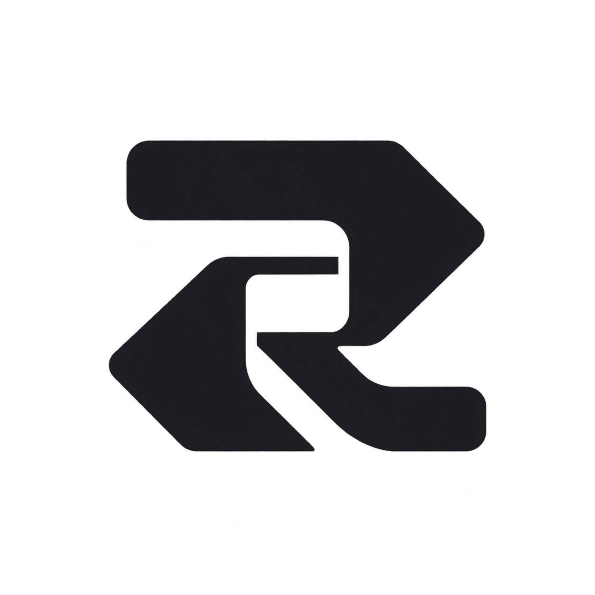
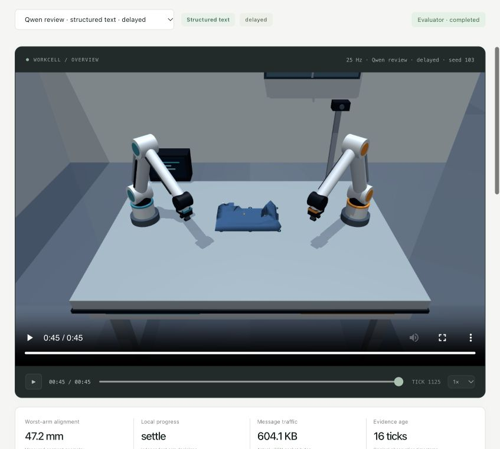
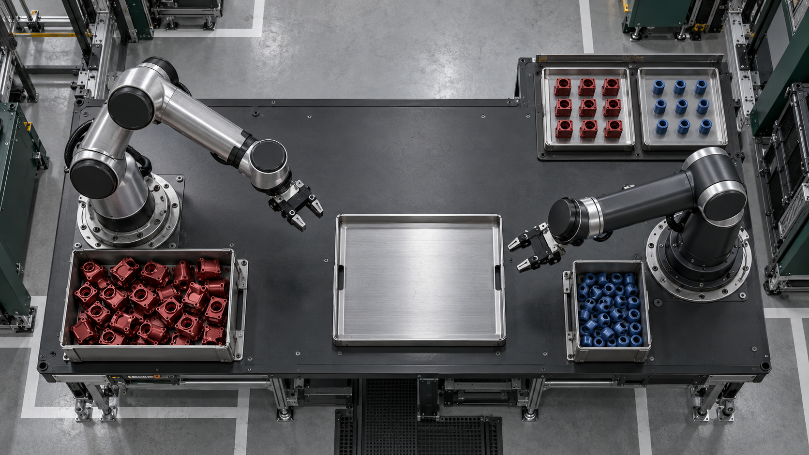
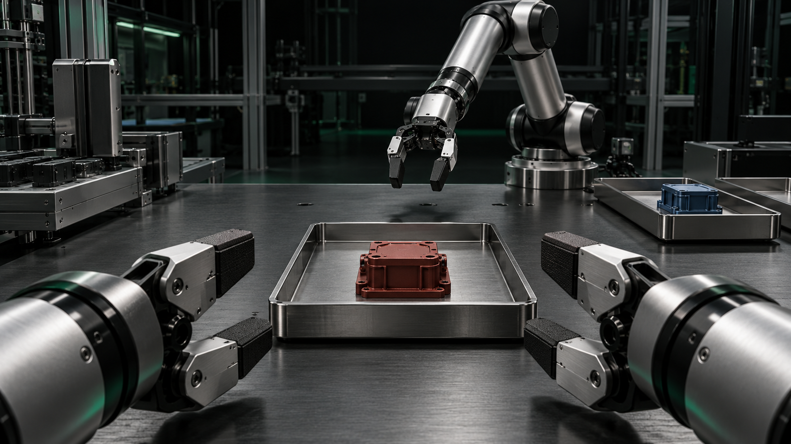
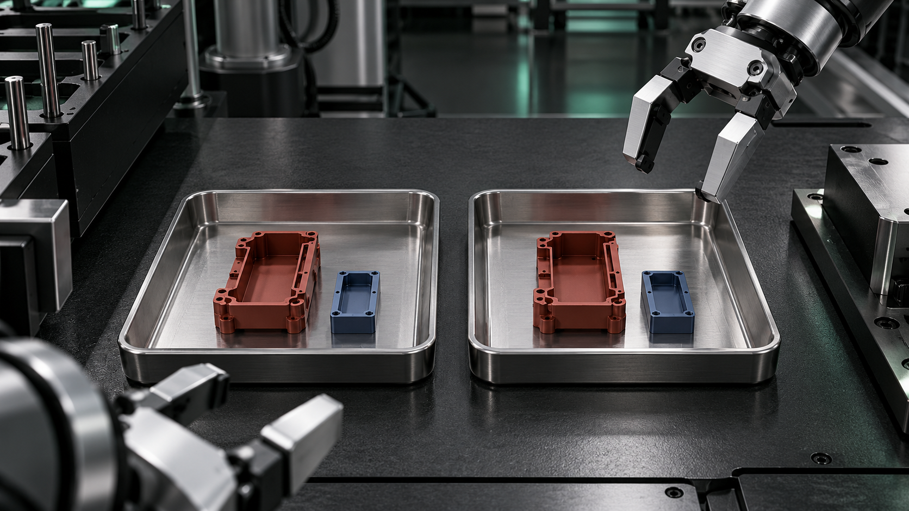
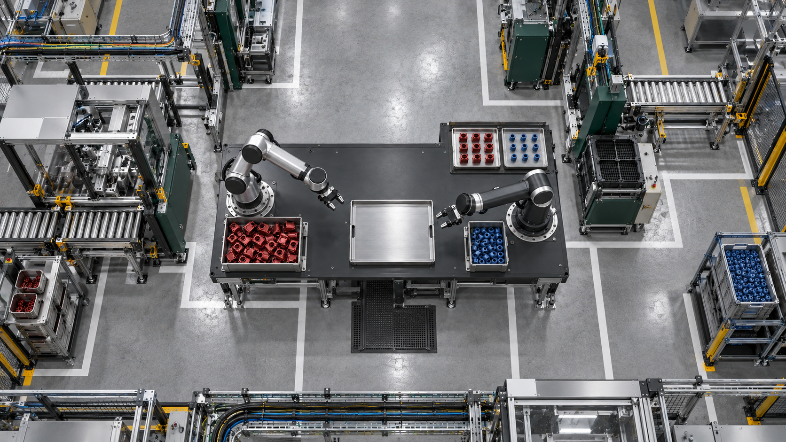
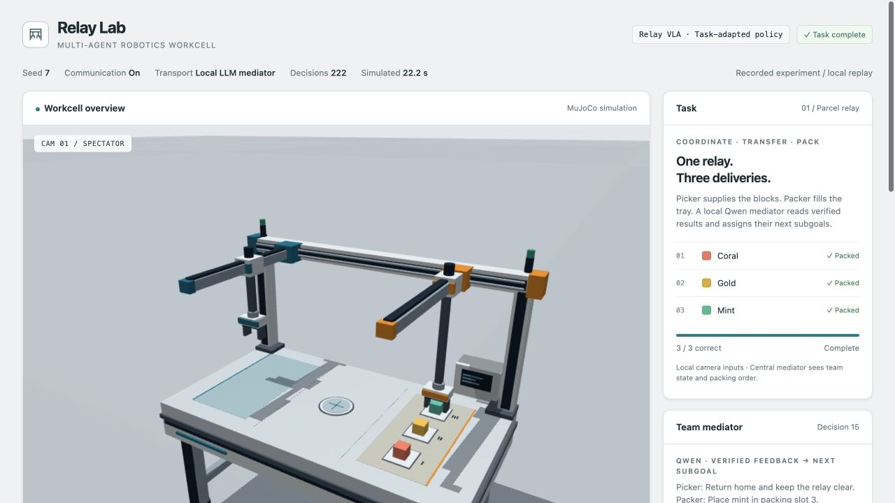

Let operators focus on exceptions.
Coordinate routine assignments, readiness checks, and handoffs so people spend less time directing each step. Track interventions per completed job.

relayStart a project ↗Bring your robot workforce and the job you need done.
We design the coordination that helps your robots work together—
with less manual effort, less waiting, and better use of your time.
Inspect the folding workflow, local observations, and recorded results.

RECORDED MUJOCO WORKCELLExample brief: use two existing arms to prepare component kits with fewer operator handoffs. Relay coordinates task ownership, shared-tray access, and completion checks while each controller executes its supported skills.
From workforce brief to coordinated execution Our approach ↓
Loading the overhead workcell…
Two robots use different VLA models. Relay assigns each one a part of the same packing job.

You define the operational goal. We connect your robot capabilities into a coordinated workflow, then measure where waiting, manual intervention, and wasted effort can be reduced.
Watch the handoff ↗A coordination engineering service for companies operating mixed robot fleets. We assess your controllers, supported tasks, and constraints, design the workflow, and evaluate it against your current process.
Coordinate routine assignments, readiness checks, and handoffs so people spend less time directing each step. Track interventions per completed job.
Overlap independent work and order shared-resource access. Evaluate robot utilization, idle time, and completed jobs per hour.

03 / Save timeMake dependencies and readiness explicit so the next robot can start when conditions are met. Compare end-to-end cycle time with your baseline.

04 / Reduce operating costMeasure operator time, robot runtime, and recovery effort together. Estimate savings from observed pilot results rather than assumed gains.
These are optimization goals, not guaranteed results. Pilot outcomes depend on your robots, available skills, integration access, and operating constraints.
A picking arm supplies a housing. A second arm adds an insert and packs the kit. Relay coordinates the transfer so preparation can continue in parallel.
Pick → Transfer → PackSee the workflow ↗One station inspects a part and reports the result. Another robot routes it to the correct bin after receiving the part ID and decision.
Inspect → Report → SortExplore coordination ↗A loading robot feeds a machine. A second robot collects finished parts. Relay sequences access to the shared station and records when a part is ready.
Load → Process → UnloadExplore coordination ↗We start with your robot inventory and a measurable problem, agree on an integration scope, and evaluate the coordination program in simulation before a scoped pilot.
Build your workforce brief ↗We map existing capabilities, design the task and communication rules, coordinate shared resources, and evaluate the result. Your robot controllers stay responsible for execution.
We identify each robot’s supported skills, interfaces, and constraints, then turn your objective into tasks with clear owners and completion criteria.
We define readiness, acceptance, failure, and handoff events so separate controllers can follow a consistent workflow.
We sequence access to shared stations and identify work that can run in parallel, subject to robot-side safety checks.
One reservation at a time.
Independent tasks continue elsewhere.
We evaluate cycle time, interventions, utilization, and cost assumptions. A completed action needs evidence; an improvement needs a comparison.
The service focuses on coordination outcomes. The research investigates whether task-relevant latent representations can improve how different robot models exchange information.
With model access and compatible adapters, capture task-relevant features from each controller. Raw latent vectors from different models are not automatically comparable.
The proposed architecture uses SpacetimeDB to share state records, task context, and representation references. Storage makes data available; it does not align the representations.
robot_id arm_a
observed_at tick 128
task_id fold_01
status committed
A proposed alignment and neural allocation layer assesses compatible features alongside capabilities and operating constraints. Assignments return through each robot’s own adapter and controller.
Research direction, not a validated production capability. The landing-page animation illustrates coordination. The Projects section includes a recorded learned-control backend run. Neither demonstrates learned cross-model latent alignment.
Relay Lab is the executable research prototype behind this project: local Qwen planning, learned robot actions, MuJoCo physics, and SpacetimeDB coordination.

OPEN INTERACTIVE REPLAY ↗The included seed-7 run packed coral, gold, and mint in order. Explore its timeline, model predictions, observed feedback, and completion evidence.
This is a portable replay of a completed run, not a live inference endpoint. The Python / MLX backend runs separately from this static website.
uv run --extra learned relay-lab run --seed 7Source snapshot: 91abf8f · Repository setup requires the local models, dependencies, and SpacetimeDB described in its README.Explore partial observations, moving obstacles, message delays, and communication comparisons in the recorded research dashboard.
Open folding dashboard ↗Explore measured coordination analytics ↗
Describe the workforce and the workflow you want to improve. Create a portable brief to start a scoped coordination engagement.
This website runs a deterministic local simulation. Its animations are generated by the simulation engine. Real VLA inference and physical robots require configured backend adapters.
A scoped engagement starts with your robot inventory, supported skills, operating constraints, and success metrics. We design a coordination workflow, evaluate it in simulation, and define what a pilot would need. Integration scope and outcomes must be agreed for your system.
Compatibility is assessed first. We need access to supported controller interfaces, robot skills, and operational state. An adapter translates task requests into actions your controller already supports; connecting Relay does not give a robot new physical capabilities.
A mission service records reservations before issuing conflicting work. On hardware, robot-side collision checks and safety mechanisms remain necessary. A browser pause is not an emergency stop.